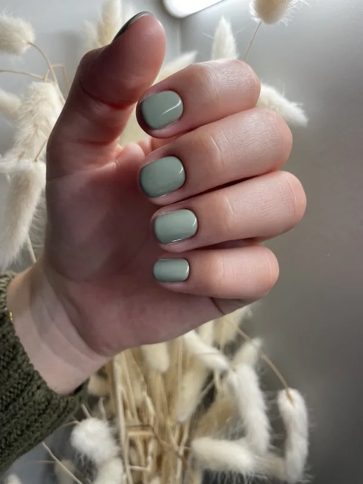
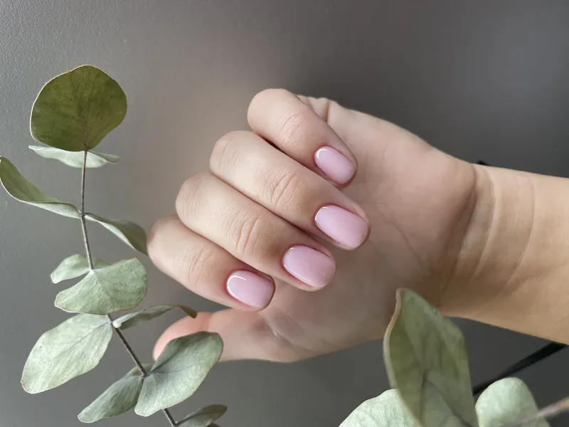
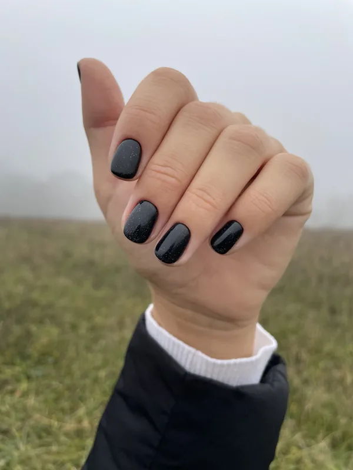
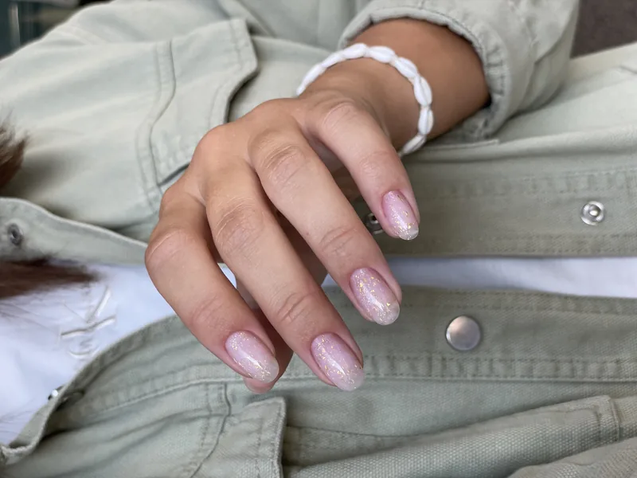

Upravené ruce jsou vizitka. Ve Studiu 7 v Brně-Komíně se zaměřujeme na jemnou manikúru s gellakem — přirozené, tenké a decentní nehty bez zbytečných efektů. Najdete nás u zastávky Branka (tramvaj 1 a 3).
Základem je vždy pečlivá manikúra — úprava nehtového lůžka, kůžičky a tvaru. Na ni navazuje gel lak v barvě podle vašeho přání, který vydrží zpravidla 3–4 týdny bez oprýskání.
Jemnost a jednoduchost se vrací do módy — a právě tohoto motta se Studio 7 drží nejvíce. Žádné extravagantní kreace, ale čistá práce a přirozený výsledek, který sluší každý den.




| Manikúra | 690 Kč |
| Odstranění materiálu + manikúra | 790 Kč |
| Manikúra + gellak (krátké nehty) | 990 Kč |
| Oprava nehtů | od 70 Kč |
| Zpevnění nehtů | od 50 Kč |
| Odstranění cizího materiálu | 150 Kč |
| Francouzská manikúra | 200 Kč |
| Malování | 100–200 Kč |
| Kamínky Swarovski (1 ks) | 30 Kč |
Kompletní ceník všech služeb najdete na hlavní stránce.
Naše studio leží v klidném Komíně, jen pár minut tramvají č. 1 a 3 od Bystrce, Žabovřesk i Králova Pole — a přes řeku z Jundrova. Na Googlu máme hodnocení 5,0 z 14 recenzí. Přijďte se přesvědčit, proč k nám klientky jezdí z celého Brna.